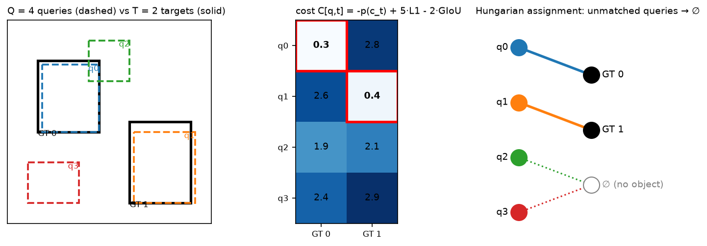

DETR and set prediction¶
Why this matters at staff level. DETR turned detection into the problem a language model already solves, emitting a set of outputs from a fixed pool of queries, and its descendants (Deformable DETR, DINO, RT-DETR, DETR3D and BEVFormer in autonomy, Mask2Former in segmentation, the SAM decoder) are how modern perception systems talk to Transformers. Interviewers use it to test whether you can turn "no NMS" into a concrete loss: the matching cost, the Hungarian step, the "no object" weighting, and why the original converged so slowly. Strong signal is deriving the loss at a whiteboard, implementing the matcher, and naming which fix addresses which failure.
TL;DR: the interview card¶
- Detection as set prediction: \(Q\) learned object queries, usually 100 to 900, cross-attend to image tokens in a Transformer decoder and each emits \((\hat p_q \in \Delta^{K+1}, \hat b_q \in [0,1]^4)\). No anchors, no NMS. The model has to learn not to duplicate.
- Matching is a minimum-cost bipartite assignment \(\hat\sigma = \argmin_\sigma \sum_t C[\sigma(t), t]\) with \(C[q,t] = -\hat p_q(c_t) + \lambda_1 \|\hat b_q - b_t\|_1 + \lambda_2\,(1 - \text{GIoU}(\hat b_q, b_t))\), solved by the Hungarian algorithm in \(O(Q^3)\).
- Loss after matching: \(L = \sum_q -\log \hat p_q(c_{\sigma^{-1}(q)}) + \sum_t [\lambda_1 \|\cdot\|_1 + \lambda_2 (1-\text{GIoU})]\), with the "no object" class weighted by 0.1 because \(Q\) greatly exceeds the number of objects. DETR uses \(\lambda_1 = 5\), \(\lambda_2 = 2\), and applies the same loss at every decoder layer.
- GIoU \(= \text{IoU} - |C\setminus(A\cup B)|/|C|\) where \(C\) is the enclosing box. It is a bounded, scale-invariant box loss with gradient even when boxes do not overlap.
- Slow convergence, 500 epochs on COCO, came from dense global attention over high-resolution features and from queries with no spatial prior, which makes early matchings unstable. Fixes: Deformable DETR (sparse multi-scale sampling), Conditional and DAB-DETR (queries are anchor boxes), DN-DETR and DINO (denoising queries), RT-DETR for real time.
- Set prediction removes the NMS threshold and the anchor design from your system. The cost is \(Q\) fixed output slots and a matcher in the training loop.
- The anchor-based detectors this replaces are in object detection.
1. Intuition first¶
Consider an image with two objects and a detector with \(Q = 4\) query slots. Each slot outputs a class distribution over \(\{\text{cat}, \text{dog}, \dots, \varnothing\}\) and a box. A set loss has to answer one question: which slot is responsible for which object? An anchor-based detector answers by geometry, picking the anchor with highest IoU, and then needs NMS to remove the other anchors that also fired. DETR answers by solving a tiny optimisation: build a \(4\times2\) cost matrix, find the one-to-one assignment of lowest total cost, train the matched slots to predict their object, and train the other two to say \(\varnothing\).

Look at the middle panel: the cost is low where the box overlaps and the class probability is high. The red cells are the assignment, and queries 2 and 3 are unmatched so they get the "no object" target. Because the assignment is one-to-one, at most one query can be rewarded for each object, so duplicates are penalised by construction. That is why NMS is unnecessary.
Everything after the backbone is a Transformer.
flowchart LR
A["image (B, 3, H, W)"] --> B["CNN / ViT backbone (B, d_b, H/32, W/32)"]
B --> C["1x1 conv + flatten + 2D pos (B, N, d)"]
C --> D["encoder: self-attention over N image tokens"]
D --> E["decoder: Q learned queries;<br/>self-attn among queries + cross-attn to image"]
E --> F["class head (B, Q, K+1)<br/>box head (B, Q, 4)"]
F --> G["training: Hungarian match + set loss<br/>inference: threshold, no NMS"]2. The math¶
2.1 Set prediction and the matching problem¶
Let the ground truth be a set \(y = \{(c_t, b_t)\}_{t=1}^{T}\) with \(c_t \in \{1..K\}\) and \(b_t \in [0,1]^4\) in normalised \((c_x, c_y, w, h)\). Pad \(y\) with \(\varnothing\) to size \(Q\). The model outputs \(\hat y = \{(\hat p_q, \hat b_q)\}_{q=1}^{Q}\). Because the outputs form a set, the loss must be invariant to how the \(Q\) slots are ordered, which we get by minimising over permutations \(\sigma \in \mathfrak S_Q\):
Padded targets contribute zero cost to every query, so only the \(T\) real targets matter and
the problem is a rectangular \(Q\times T\) assignment. Two choices in the matching cost deserve
a sentence each. The class term uses the probability \(-\hat p_q(c_t)\) rather than the
log-probability so that it is commensurate with the bounded box terms; the loss proper uses
\(-\log \hat p\). And the matching runs under no_grad, because it is a combinatorial step
that selects targets rather than a differentiable function.
2.2 The box cost: L1 and GIoU¶
An \(\ell_1\) loss on normalised boxes gives the same value for a 1-pixel error on a small box and on a large one, so it is scale-sensitive. IoU is scale-invariant but has zero gradient when boxes do not overlap. Generalised IoU fixes that. With \(C\) the smallest box enclosing \(A\) and \(B\),
which equals IoU when \(C = A\cup B\) (boxes touch or nest) and decreases toward \(-1\) as boxes separate, so it pulls non-overlapping boxes together. The combined box term is
2.3 The Hungarian algorithm¶
Given a cost matrix \(C \in \R^{n\times m}\) with \(n \le m\) after transposing, the assignment
problem is a linear program whose dual has potentials \(u \in \R^n\), \(v \in \R^m\) with
\(u_i + v_j \le C_{ij}\). At the optimum,
\(\sum_i u_i + \sum_j v_j = \sum_{(i,j)\in\sigma} C_{ij}\) and every matched edge is tight, so
\(u_i + v_j = C_{ij}\). The \(O(n^2 m)\) shortest-augmenting-path form inserts rows one at a
time. Starting from the new row, run a Dijkstra-like search over reduced costs
\(C_{ij} - u_i - v_j\) across the alternating tree of matched edges until a free column is
reached, adjusting the potentials by the minimum slack \(\delta\) at each step so the tree
stays tight, then flip the matched and unmatched status along the path. Each insertion adds
one matched pair and preserves dual feasibility, so after \(n\) insertions the assignment is
optimal. hungarian() in section 3 is this algorithm, tested against
scipy.optimize.linear_sum_assignment.
The matcher is exact and cheap: at \(Q = 100\) and \(T \le 100\) it takes microseconds. The cost of set prediction is never the matching itself, it is the instability of the matching early in training, which section 2.6 addresses.
2.4 The DETR loss¶
With \(\hat\sigma\) fixed, the loss is a sum over slots:
where \(c_q\) is the class of the target matched to slot \(q\), or \(\varnothing\), and \(w_{\varnothing} = 0.1\) with \(w_{k} = 1\) otherwise. The down-weighting is a class-imbalance correction: with \(Q = 100\) and a median of about 7 objects per COCO image, over 90% of slots are \(\varnothing\) and would dominate the gradient. Box terms are normalised by the number of targets in the batch rather than per image, so images with many objects are not down-weighted. DETR also applies the same loss to the output of every decoder layer, which the paper reports as important: it forces each layer to produce a usable set instead of relying on the last one, and gives the queries six times more gradient signal.
The whole objective is a classification loss plus a regression loss. The only new machinery is choosing the targets by matching, and the only new hyperparameter is the \(\varnothing\) weight.
2.5 The architecture¶
Backbone features \((B, d_b, H/32, W/32)\) are reduced by a \(1\times1\) conv to \(d = 256\),
flattened to \(N = HW/1024\) tokens, and given a fixed 2-D sinusoidal position encoding added
to \(Q\) and \(K\) at every attention layer rather than once at the input. Six encoder layers
apply self-attention over the \(N\) tokens. Six decoder layers take \(Q\) learned object queries
\(O \in \R^{Q\times d}\), a learned embedding identical for every image. Each layer runs
self-attention among the queries, so they can coordinate and avoid duplicates, then
cross-attention where the queries supply \(Q\) and the image tokens supply \(K\) and \(V\), which
is the MultiHeadCrossAttention of attention_block.py. Decoding is parallel rather than
autoregressive: all \(Q\) outputs are produced in one pass. A linear class head and a 3-layer
MLP box head with sigmoid output sit on every decoder layer.
2.6 Why it converged slowly, and the fixes¶
DETR needed 500 epochs on COCO to reach 42 AP with a ResNet-50, against roughly 36 epochs for Faster R-CNN. Two causes are identifiable.
Dense attention on high-resolution features. Cross-attention weights start uniform over \(N\) image tokens, and learning to focus on a few relevant tokens through a softmax over thousands of positions is slow. Moving to multi-scale features, which small objects need, makes \(N\) prohibitive. Deformable DETR replaces dense attention with sparse sampling: each query predicts, per head and per scale, \(K = 4\) sampling offsets around a reference point and \(K\) attention weights, then reads bilinearly interpolated values there. Cost per query drops from \(O(N)\) to \(O(LK)\) over \(L = 4\) scales, training drops to 50 epochs, and small-object AP improves because the decoder can read stride-8 features. The same mechanism runs in the encoder, where each token samples around itself.
Queries without a spatial prior. A learned query vector has to encode where to look implicitly, and early in training that is random, so the Hungarian assignment flips between epochs and the gradient chases a moving target. Conditional DETR separates the content and spatial parts of the query so cross-attention can localise by position. DAB-DETR makes it explicit: each query is a 4-D anchor box \((x, y, w, h)\), its positional embedding is a sinusoid of that box, width and height modulate the attention spread, and each decoder layer refines the box, so the decoder becomes iterative regression from anchors. DN-DETR attacks the matching instability directly by adding extra queries built from ground-truth boxes with noise, jittered coordinates and flipped labels, trained to reconstruct the clean box without matching. Those queries have known targets, so they provide a stable gradient from step 1. DINO adds contrastive denoising with positive and negative noised boxes, so the model also learns to reject near-duplicates, initialises queries from top-scoring encoder tokens, and refines boxes across layers. It was the first DETR-family model to top the COCO leaderboard.
RT-DETR makes the family real-time. It restricts full self-attention to the lowest resolution scale and fuses scales with a lightweight CNN path, an efficient hybrid encoder, selects the initial queries by predicted IoU-aware confidence, and lets you drop decoder layers at inference to trade accuracy for latency without retraining. Its authors report it outperforming YOLO detectors at the same speed on a T4 GPU, with no NMS in the deployment graph, which removes NMS's data-dependent latency from the pipeline.
The modern recipe is therefore anchor boxes as queries, sparse multi-scale attention, and denoising queries. The set loss of section 2.4 is unchanged.
3. Implementation¶
3.1 Hungarian algorithm in NumPy¶
def hungarian(cost: np.ndarray) -> tuple[np.ndarray, np.ndarray]:
cost = np.asarray(cost, dtype=float)
transposed = cost.shape[0] > cost.shape[1]
if transposed:
cost = cost.T # (n, m) with n <= m
n, m = cost.shape
u = np.zeros(n + 1) # row potentials, 1-indexed
v = np.zeros(m + 1) # column potentials, 1-indexed
match_col = np.zeros(m + 1, dtype=int) # match_col[j] = row matched to column j (0 = free)
for i in range(1, n + 1):
match_col[0] = i # virtual column 0 holds the row being inserted
j0 = 0
min_v = np.full(m + 1, np.inf) # best reduced cost seen per column
way = np.zeros(m + 1, dtype=int) # predecessor column on the alternating path
used = np.zeros(m + 1, dtype=bool)
while True: # shortest augmenting path over reduced costs
used[j0] = True
i0 = match_col[j0]
delta, j1 = np.inf, 0
for j in range(1, m + 1):
if used[j]:
continue
cur = cost[i0 - 1, j - 1] - u[i0] - v[j]
if cur < min_v[j]:
min_v[j], way[j] = cur, j0
if min_v[j] < delta:
delta, j1 = min_v[j], j
for j in range(m + 1): # shift potentials; the visited tree stays tight
if used[j]:
u[match_col[j]] += delta
v[j] -= delta
else:
min_v[j] -= delta
j0 = j1
if match_col[j0] == 0:
break # free column reached, so augment
while j0 != 0: # flip the path
j1 = way[j0]
match_col[j0] = match_col[j1]
j0 = j1
... # unpack match_col into (rows, cols), undo the transpose
Read the inner loop as Dijkstra where the distance to column \(j\) is the smallest reduced cost of any edge from the visited rows, and \(\delta\) is the next node to settle. The potential update keeps every already-matched edge tight after settling.
3.2 GIoU, the matching cost and the loss¶
def pairwise_giou(a: torch.Tensor, b: torch.Tensor) -> torch.Tensor:
area_a = (a[:, 2] - a[:, 0]) * (a[:, 3] - a[:, 1]) # (N,)
area_b = (b[:, 2] - b[:, 0]) * (b[:, 3] - b[:, 1]) # (M,)
lt = torch.max(a[:, None, :2], b[None, :, :2]) # (N, M, 2)
rb = torch.min(a[:, None, 2:], b[None, :, 2:]) # (N, M, 2)
wh = (rb - lt).clamp(min=0) # (N, M, 2)
inter = wh[..., 0] * wh[..., 1] # (N, M)
union = area_a[:, None] + area_b[None, :] - inter # (N, M)
iou = inter / union # (N, M)
lt_c = torch.min(a[:, None, :2], b[None, :, :2]) # (N, M, 2) enclosing box
rb_c = torch.max(a[:, None, 2:], b[None, :, 2:]) # (N, M, 2)
wh_c = (rb_c - lt_c).clamp(min=0) # (N, M, 2)
area_c = wh_c[..., 0] * wh_c[..., 1] # (N, M)
return iou - (area_c - union) / area_c # (N, M)
@torch.no_grad()
def hungarian_match(logits, boxes, targets, w_class=1.0, w_l1=5.0, w_giou=2.0):
out = []
for b, tgt in enumerate(targets):
prob = logits[b].softmax(-1) # (Q, K+1)
cost_class = -prob[:, tgt["labels"]] # (Q, T)
cost_l1 = torch.cdist(boxes[b], tgt["boxes"], p=1) # (Q, T)
cost_giou = -pairwise_giou(box_cxcywh_to_xyxy(boxes[b]),
box_cxcywh_to_xyxy(tgt["boxes"])) # (Q, T)
C = w_class * cost_class + w_l1 * cost_l1 + w_giou * cost_giou # (Q, T)
rows, cols = hungarian(C.cpu().numpy())
out.append((torch.as_tensor(rows), torch.as_tensor(cols)))
return out
def detr_loss(logits, boxes, targets, w_l1=5.0, w_giou=2.0, eos_coef=0.1):
B, Q, K1 = logits.shape
no_obj = K1 - 1
match = hungarian_match(logits, boxes, targets, w_l1=w_l1, w_giou=w_giou)
target_classes = torch.full((B, Q), no_obj, dtype=torch.long) # (B, Q): default = no object
matched_pred, matched_tgt = [], []
for b, (rows, cols) in enumerate(match):
target_classes[b, rows] = targets[b]["labels"][cols]
matched_pred.append(boxes[b, rows]) # (T_b, 4)
matched_tgt.append(targets[b]["boxes"][cols]) # (T_b, 4)
class_weight = torch.ones(K1) # (K+1,)
class_weight[no_obj] = eos_coef
loss_ce = F.cross_entropy(logits.reshape(B * Q, K1), target_classes.reshape(B * Q), weight=class_weight)
pred_b = torch.cat(matched_pred, dim=0) # (T_total, 4)
tgt_b = torch.cat(matched_tgt, dim=0) # (T_total, 4)
n_tgt = max(pred_b.shape[0], 1)
loss_l1 = (pred_b - tgt_b).abs().sum() / n_tgt
giou = pairwise_giou(box_cxcywh_to_xyxy(pred_b), box_cxcywh_to_xyxy(tgt_b)).diagonal() # (T_total,)
loss_giou = (1.0 - giou).sum() / n_tgt
return {"loss": loss_ce + w_l1 * loss_l1 + w_giou * loss_giou, ...}
The matcher builds the \(Q\times T\) cost with three broadcasts and calls the NumPy Hungarian.
The loss writes matched labels into a (B, Q) target tensor pre-filled with \(\varnothing\),
so a single cross-entropy over all \(BQ\) slots with weight implements
\(w_\varnothing = 0.1\). Box terms use only the matched rows, normalised by the number of
targets in the batch.
Full implementation: src/mlbook/multimodal/hungarian.py
"""The Hungarian (Kuhn–Munkres) algorithm for minimum-cost bipartite matching, in NumPy.
Given a cost matrix ``C`` of shape ``(n, m)`` (rows = predictions, cols = targets),
find a one-to-one assignment of ``min(n, m)`` pairs minimising the summed cost.
This is the O(n^3) potential-based ("shortest augmenting path") formulation:
for each row we grow an alternating tree from that row until we reach a free
column, maintaining dual potentials ``u`` (rows) and ``v`` (columns) such that
``C[i, j] - u[i] - v[j] >= 0`` and equality holds on matched edges.
"""
from __future__ import annotations
import numpy as np
def hungarian(cost: np.ndarray) -> tuple[np.ndarray, np.ndarray]:
"""Minimum-cost assignment. ``cost``: (n, m). Returns (row_idx, col_idx), each (min(n, m),), sorted by row.
Equivalent to ``scipy.optimize.linear_sum_assignment(cost)``.
"""
cost = np.asarray(cost, dtype=float)
transposed = cost.shape[0] > cost.shape[1]
if transposed:
cost = cost.T # (n, m) with n <= m
n, m = cost.shape
INF = float("inf")
u = np.zeros(n + 1) # row potentials, 1-indexed
v = np.zeros(m + 1) # column potentials, 1-indexed
match_col = np.zeros(m + 1, dtype=int) # match_col[j] = row matched to column j (0 = free)
for i in range(1, n + 1):
match_col[0] = i # virtual column 0 holds the row we are inserting
j0 = 0
min_v = np.full(m + 1, INF) # min reduced cost seen for each column
way = np.zeros(m + 1, dtype=int) # way[j] = previous column on the alternating path
used = np.zeros(m + 1, dtype=bool)
while True: # Dijkstra-like search for a shortest augmenting path
used[j0] = True
i0 = match_col[j0]
delta, j1 = INF, 0
for j in range(1, m + 1):
if used[j]:
continue
cur = cost[i0 - 1, j - 1] - u[i0] - v[j] # reduced cost of edge (i0, j)
if cur < min_v[j]:
min_v[j], way[j] = cur, j0
if min_v[j] < delta:
delta, j1 = min_v[j], j
for j in range(m + 1): # update potentials so the visited tree stays tight
if used[j]:
u[match_col[j]] += delta
v[j] -= delta
else:
min_v[j] -= delta
j0 = j1
if match_col[j0] == 0:
break # reached a free column: augment
while j0 != 0: # flip the alternating path
j1 = way[j0]
match_col[j0] = match_col[j1]
j0 = j1
rows = np.empty(n, dtype=int)
cols = np.empty(n, dtype=int)
for j in range(1, m + 1):
if match_col[j] > 0:
rows[match_col[j] - 1] = match_col[j] - 1
cols[match_col[j] - 1] = j - 1
if transposed:
order = np.argsort(cols)
return cols[order], rows[order]
return rows, cols
def assignment_cost(cost: np.ndarray, rows: np.ndarray, cols: np.ndarray) -> float:
"""Sum of ``cost[rows, cols]`` for a proposed assignment."""
return float(np.asarray(cost)[rows, cols].sum())
Full implementation: src/mlbook/multimodal/detr_loss.py
"""DETR-style set prediction: matching cost, Hungarian matcher, and the loss.
Predictions: class logits ``(B, Q, K+1)`` (last index = "no object") and boxes
``(B, Q, 4)`` in normalised ``(cx, cy, w, h)``. Targets: a list of dicts with
``labels`` ``(T_b,)`` and ``boxes`` ``(T_b, 4)``.
Matching cost for prediction q and target t:
C[q, t] = -p_q(c_t) + λ_L1 ||b_q - b_t||_1 + λ_giou (-GIoU(b_q, b_t))
Loss after matching σ:
L = CE(logits, labels ∪ {no-object}, w_noobj) + λ_1 Σ L1 + λ_2 Σ (1 - GIoU)
"""
from __future__ import annotations
import numpy as np
import torch
from .hungarian import hungarian
def box_cxcywh_to_xyxy(b: torch.Tensor) -> torch.Tensor:
"""(..., 4) (cx, cy, w, h) -> (..., 4) (x1, y1, x2, y2)."""
cx, cy, w, h = b.unbind(-1)
return torch.stack([cx - w / 2, cy - h / 2, cx + w / 2, cy + h / 2], dim=-1) # (..., 4)
def pairwise_giou(a: torch.Tensor, b: torch.Tensor) -> torch.Tensor:
"""Generalised IoU between every pair: ``a`` (N, 4), ``b`` (M, 4), xyxy -> (N, M).
GIoU = IoU - |C \\ (A ∪ B)| / |C|, C = smallest enclosing box. Range (-1, 1].
"""
area_a = (a[:, 2] - a[:, 0]) * (a[:, 3] - a[:, 1]) # (N,)
area_b = (b[:, 2] - b[:, 0]) * (b[:, 3] - b[:, 1]) # (M,)
lt = torch.max(a[:, None, :2], b[None, :, :2]) # (N, M, 2) top-left of intersection
rb = torch.min(a[:, None, 2:], b[None, :, 2:]) # (N, M, 2) bottom-right of intersection
wh = (rb - lt).clamp(min=0) # (N, M, 2)
inter = wh[..., 0] * wh[..., 1] # (N, M)
union = area_a[:, None] + area_b[None, :] - inter # (N, M)
iou = inter / union # (N, M)
lt_c = torch.min(a[:, None, :2], b[None, :, :2]) # (N, M, 2) enclosing box
rb_c = torch.max(a[:, None, 2:], b[None, :, 2:]) # (N, M, 2)
wh_c = (rb_c - lt_c).clamp(min=0) # (N, M, 2)
area_c = wh_c[..., 0] * wh_c[..., 1] # (N, M)
return iou - (area_c - union) / area_c # (N, M)
@torch.no_grad()
def hungarian_match(
logits: torch.Tensor,
boxes: torch.Tensor,
targets: list[dict],
w_class: float = 1.0,
w_l1: float = 5.0,
w_giou: float = 2.0,
) -> list[tuple[torch.Tensor, torch.Tensor]]:
"""Per image, the (pred_idx, tgt_idx) pairs minimising the matching cost.
``logits`` (B, Q, K+1), ``boxes`` (B, Q, 4) cxcywh. Returns a list of B tuples of long tensors (T_b,).
"""
out = []
for b, tgt in enumerate(targets):
T = tgt["labels"].shape[0]
if T == 0:
out.append((torch.zeros(0, dtype=torch.long), torch.zeros(0, dtype=torch.long)))
continue
prob = logits[b].softmax(-1) # (Q, K+1)
cost_class = -prob[:, tgt["labels"]] # (Q, T): minus prob of the target's class
cost_l1 = torch.cdist(boxes[b], tgt["boxes"], p=1) # (Q, T)
cost_giou = -pairwise_giou(box_cxcywh_to_xyxy(boxes[b]), box_cxcywh_to_xyxy(tgt["boxes"])) # (Q, T)
C = w_class * cost_class + w_l1 * cost_l1 + w_giou * cost_giou # (Q, T)
rows, cols = hungarian(C.cpu().numpy())
out.append((torch.as_tensor(rows, dtype=torch.long), torch.as_tensor(cols, dtype=torch.long)))
return out
def detr_loss(
logits: torch.Tensor,
boxes: torch.Tensor,
targets: list[dict],
w_l1: float = 5.0,
w_giou: float = 2.0,
eos_coef: float = 0.1,
) -> dict[str, torch.Tensor]:
"""Set loss L = CE + w_l1 * L1 + w_giou * (1 - GIoU), box terms normalised by number of targets.
``logits`` (B, Q, K+1), ``boxes`` (B, Q, 4). Unmatched queries are trained to
predict "no object" (class index K) with weight ``eos_coef`` in the CE.
Returns dict with ``loss``, ``loss_ce``, ``loss_l1``, ``loss_giou``.
"""
B, Q, K1 = logits.shape
no_obj = K1 - 1
match = hungarian_match(logits, boxes, targets, w_l1=w_l1, w_giou=w_giou)
target_classes = torch.full((B, Q), no_obj, dtype=torch.long) # (B, Q), default = no object
matched_pred, matched_tgt = [], []
for b, (rows, cols) in enumerate(match):
target_classes[b, rows] = targets[b]["labels"][cols]
matched_pred.append(boxes[b, rows]) # (T_b, 4)
matched_tgt.append(targets[b]["boxes"][cols]) # (T_b, 4)
class_weight = torch.ones(K1) # (K+1,)
class_weight[no_obj] = eos_coef
loss_ce = torch.nn.functional.cross_entropy(logits.reshape(B * Q, K1), target_classes.reshape(B * Q), weight=class_weight)
pred_b = torch.cat(matched_pred, dim=0) # (T_total, 4)
tgt_b = torch.cat(matched_tgt, dim=0) # (T_total, 4)
n_tgt = max(pred_b.shape[0], 1)
loss_l1 = (pred_b - tgt_b).abs().sum() / n_tgt
giou = pairwise_giou(box_cxcywh_to_xyxy(pred_b), box_cxcywh_to_xyxy(tgt_b)).diagonal() # (T_total,)
loss_giou = (1.0 - giou).sum() / n_tgt
total = loss_ce + w_l1 * loss_l1 + w_giou * loss_giou
return {"loss": total, "loss_ce": loss_ce, "loss_l1": loss_l1, "loss_giou": loss_giou}
def matching_as_permutation(match: list[tuple[torch.Tensor, torch.Tensor]], Q: int) -> list[np.ndarray]:
"""For tests: turn each image's (rows, cols) into an array ``perm`` (Q,) with perm[q] = target index or -1."""
out = []
for rows, cols in match:
perm = -np.ones(Q, dtype=int)
perm[rows.numpy()] = cols.numpy()
out.append(perm)
return out
How you'd test it. tests/test_multimodal_detr.py checks that hungarian matches
scipy.optimize.linear_sum_assignment in total cost on random square and rectangular
matrices and on a hand-solved \(3\times3\); that pairwise_giou returns 1 for identical boxes,
0 for touching boxes and \(-1/3\) for unit boxes separated by a unit gap; that the loss is
below \(10^{-5}\) when two queries predict the two targets exactly with confident logits and
the rest predict \(\varnothing\); that permuting the queries, and separately the targets,
leaves the matching and the loss unchanged; and that gradients stay finite with an empty
target image in the batch.
Retype by hand¶
| Symbol | File | Retype? | Target time |
|---|---|---|---|
hungarian |
src/mlbook/multimodal/hungarian.py |
Yes, it is the classic coding-round ask | 30 min |
pairwise_giou, box_cxcywh_to_xyxy |
src/mlbook/multimodal/detr_loss.py |
Yes | 10 min |
hungarian_match |
src/mlbook/multimodal/detr_loss.py |
Yes | 10 min |
detr_loss |
src/mlbook/multimodal/detr_loss.py |
Yes | 15 min |
assignment_cost, matching_as_permutation |
same files | Read |
Checks: python -m pytest tests/test_multimodal_detr.py -q. Per symbol, use -k hungarian,
-k giou, -k perfect_prediction, -k permutation.
4. Systems view: cost, failure modes, trade-offs¶
Compute. Encoder self-attention over \(N = HW/1024\) tokens costs \(2N^2 d\) per layer. At \(800\times1333\) input, \(N \approx 1050\), which is cheap. The problem is that multi-scale features push \(N\) past \(10^4\), since stride 8 adds 16 times more tokens, and the quadratic term past the backbone. Deformable attention makes the encoder \(O(N L K d)\). The decoder is \(O(Q N d)\) for cross-attention plus \(O(Q^2 d)\) for self-attention, which is negligible. The matcher is \(O(Q^3)\) per image on the CPU. At \(Q = 900\) in DINO it is a few milliseconds and worth running in a background thread alongside the GPU.
Latency at inference. No NMS means no data-dependent post-processing. The output is a fixed \((Q, K+1)\) and \((Q, 4)\) tensor and thresholding is a single comparison. That matters for deployment on accelerators and for latency SLAs, because NMS is a serial, variable-time op that is awkward to express in TensorRT graphs. It is why RT-DETR's authors emphasise end-to-end speed.
Failure modes.
- Small objects. DETR-R50 lags Faster R-CNN by several AP on \(\text{AP}_S\) because it decodes from stride-32 features. Fix with multi-scale deformable attention or a higher-resolution backbone stage (DC5).
- Crowded scenes with \(T > Q\). The model can output at most \(Q\) objects. Set \(Q\) well above the maximum expected count, as DINO does with 900, or tile.
- Matching flicker early in training. The loss plateaus for many epochs, and the symptom is that the same query's target changes every step. Fix with denoising queries (DN, DINO) and anchor-box queries (DAB).
- Duplicate predictions after fine-tuning on a small dataset. The query self-attention has not learned to de-duplicate for the new class distribution. More epochs, or DINO's contrastive denoising, which trains rejection of near-duplicates explicitly.
- Confidence calibration. With \(w_\varnothing = 0.1\) the \(\varnothing\) probability is under-estimated, so calibrate the operating threshold on a validation set rather than reusing a Faster R-CNN threshold.
When to use what.
| Situation | Choose | Decision rule |
|---|---|---|
| Real-time detection on GPU, end-to-end graph without NMS | RT-DETR, or a YOLO with NMS on an edge NPU | RT-DETR when NMS latency variance is a problem and a GPU is available |
| Highest accuracy, offline or server, large data | DINO-style DETR with a Swin or ViT backbone | Denoising plus anchor queries plus multi-scale deformable attention |
| Tiny dataset, under 5k images | Fine-tune a pretrained DETR-family model, or use a two-stage detector | A DETR family model from scratch will not converge in reasonable time |
| Multi-camera 3-D detection (autonomy) | DETR3D or BEVFormer style queries in 3-D space | Queries are the natural way to fuse cameras. See Part XI |
| Open-vocabulary detection | Grounding DINO or OWL-ViT | The class head becomes a dot product with text embeddings from CLIP |
| Segmentation with the same machinery | Mask2Former | Queries emit mask embeddings and the matching cost adds a mask term |
5. In production¶
Baidu: RT-DETR, a real-time DETR for deployment without NMS
The RT-DETR paper frames the business problem as YOLO's NMS being a latency and tuning liability at deployment. The authors built a hybrid encoder with attention only on the coarsest scale and CNN fusion across scales, IoU-aware query selection, and a decoder whose depth can be cut at inference. They report beating YOLO-family detectors at matched speed on a T4 GPU on COCO, and they ship it in PaddleDetection. What they rejected was Deformable DETR's full multi-scale encoder, which was too slow for real time. Source: DETRs Beat YOLOs on Real-time Object Detection, Zhao et al., CVPR 2024 (arXiv:2304.08069).
Meta (FAIR): Segment Anything's prompt decoder is a DETR-style decoder
SAM's mask decoder feeds learned output tokens, one per mask candidate plus an IoU token, together with prompt tokens through a two-way Transformer that cross-attends to the image embedding, then predicts masks from the output tokens. That is the object-query pattern with prompts as extra queries. The trade-off is a decoder small enough to run in tens of milliseconds in a browser, so the heavy image encoder runs once per image. Source: Segment Anything, Kirillov et al., ICCV 2023 (arXiv:2304.02643).
Autonomy stacks: queries as the interface between cameras and 3-D
DETR3D and BEVFormer generalise object queries to 3-D reference points that project into each camera to gather features, and the public BEV-perception literature that autonomy companies build on is DETR-shaped. Tesla's AI Day 2021 talk described learned BEV queries cross-attending to multi-camera features. The set-prediction loss carries over unchanged with 3-D boxes and a 3-D GIoU and L1 cost. Sources: DETR3D, Wang et al., CoRL 2021 (arXiv:2110.06922); BEVFormer, Li et al., ECCV 2022 (arXiv:2203.17270). More in multi-camera and BEV.
Labelling pipelines: open-vocabulary DETRs as auto-labelers
Grounding DINO, a DINO detector whose class head is a dot product with text features, combined with SAM is the standard open-source recipe for turning a text prompt into boxes and masks over an unlabelled corpus. It is used as the first pass in the auto-labelling systems of Part X. The trade-off is precision: the matcher trains for recall across many prompts, so a human-verification or high-threshold stage follows. Source: Grounding DINO, Liu et al., ECCV 2024 (arXiv:2303.05499).
6. Interview questions and strong answers¶
Why does DETR not need NMS?
The training loss is defined through a one-to-one matching. For each image, exactly one query is matched to each ground-truth object and rewarded for predicting it, and every other query is trained to output \(\varnothing\). A duplicate prediction is an unmatched query predicting an object, so it is penalised. The decoder's self-attention among queries is the mechanism that lets queries see each other and coordinate. NMS exists in anchor-based detectors because their loss assigns many anchors to each object, all with IoU above a threshold, so duplicates are rewarded in training and have to be removed afterwards. Staff follow-up: "Then why do fine-tuned DETRs sometimes still emit duplicates?" De-duplication is learned, not guaranteed. With few examples of a new class the queries have not learned to compete for it. DINO's contrastive denoising adds negative queries near each ground-truth box that must predict \(\varnothing\), which trains rejection of near-duplicates explicitly.
Write down the matching cost and the loss. Why are they different?
Cost \(C[q,t] = -\hat p_q(c_t) + 5\|\hat b_q - b_t\|_1 + 2(1 - \text{GIoU})\). Loss
\(= -\log \hat p_q(c_q)\), weighted 0.1 for \(\varnothing\), plus the same box terms on
matched pairs. The cost uses the probability rather than the log so its scale matches the
bounded box terms and the assignment is not dominated by a few very confident slots. The
loss uses the log because cross-entropy is the proper scoring rule with the right
gradient. The matching is no_grad, the loss is differentiable.
Staff follow-up: "What breaks if you set \(w_\varnothing = 1\)?" Over 90% of slots are
\(\varnothing\), so the classifier collapses toward predicting \(\varnothing\) everywhere,
recall dies early, and the matching gets no useful class signal.
Explain GIoU and why it is in both the cost and the loss.
\(\text{GIoU} = \text{IoU} - |C\setminus(A\cup B)|/|C|\) with \(C\) the enclosing box. IoU alone is zero with zero gradient for disjoint boxes, and the enclosing-box term gives a signal that decreases as boxes drift apart. It is scale-invariant, unlike L1, so the combination handles large and small boxes evenly. It appears in the cost so the matching prefers spatially close queries even before the class head is trained. Staff follow-up: "What would you change for 3-D boxes with yaw?" Rotated IoU is non-differentiable in the corner cases, so production 3-D detectors use L1 on \((x,y,z,l,w,h,\sin\theta,\cos\theta)\) plus an IoU-based cost computed without gradients for matching.
Implement the Hungarian algorithm. What is its complexity, and does it matter?
The shortest-augmenting-path form: insert rows one at a time, run a Dijkstra over reduced costs \(C_{ij} - u_i - v_j\) through the alternating tree until a free column, update potentials by the minimum slack, flip the path. It is \(O(n^2 m)\), so for \(Q\) between 100 and 900 it takes microseconds to milliseconds per image on CPU. It does not bottleneck training. In a distributed setup you run it per rank on the CPU while the GPU computes the encoder for the next batch. Staff follow-up: "Could you use a greedy assignment instead?" Greedy is not optimal and produces a different, order-dependent matching, so the loss would no longer be permutation-invariant and training gets noisier. Some work uses a Sinkhorn soft assignment for speed at very large \(Q\), but exact Hungarian is standard.
DETR took 500 epochs. Name the two causes and the fix for each.
Dense softmax attention over thousands of image tokens has to learn sparsity starting from uniform, and multi-scale makes it worse. The fix is deformable attention, sampling 4 points per scale per head with predicted offsets. Separately, queries carry no spatial prior, so the Hungarian assignment is unstable early. The fixes are anchor-box queries (DAB-DETR) so the query knows where it looks, and denoising queries (DN-DETR, DINO) that provide matched targets without the matcher. Together: 12 to 36 epochs instead of 500. Staff follow-up: "Which of these would you keep for a real-time model?" RT-DETR keeps query selection from encoder tokens and drops the full multi-scale attention encoder. Deformable attention in the decoder is retained. Denoising is a training-only cost, so keep it.
You have a DETR-family detector with 900 queries and a scene with 1,200 objects. What happens, and what do you do?
The model cannot emit more than \(Q\) detections. The matcher leaves 300 targets unmatched every step and the model learns to ignore them, biasing toward the largest or most confident objects. Options: raise \(Q\), since the cost is \(O(Q^2 d)\) in self-attention and \(O(Q N d)\) in cross-attention and stays cheap up to a few thousand; tile the image and merge with a light NMS across tile borders; or move to a dense per-pixel head for this regime, where set prediction's advantages are smallest.
7. Exercises¶
-
★ Compute GIoU by hand for \(A = [0,0,2,2]\) and \(B = [1,1,3,3]\) in xyxy.
Solution
Intersection is 1, union is \(4 + 4 - 1 = 7\), IoU is \(1/7\). The enclosing box \([0,0,3,3]\) has area 9. GIoU \(= 1/7 - (9 - 7)/9 = 0.1429 - 0.2222 = -0.079\). It is negative even though the boxes overlap, because the enclosing-box penalty is larger than the IoU when overlap is small.
-
★ Show that the DETR loss is invariant to permuting the \(Q\) output slots.
Solution
Let \(\pi\) permute the slots, \(\hat y' = \hat y \circ \pi\). For any \(\sigma\), \(\sum_t \mathcal L_{match}(y_t, \hat y'_{\sigma(t)}) = \sum_t \mathcal L_{match}(y_t, \hat y_{\pi(\sigma(t))})\), so the minimum over \(\sigma\) of the permuted problem equals the minimum over \(\pi\circ\sigma\) of the original, which ranges over the same set. Hence \(\hat\sigma' = \pi^{-1}\circ\hat\sigma\) and every term in \(L\) is unchanged.
test_matching_permutation_invariantchecks this numerically. -
★★ (coding) Add auxiliary losses: given a list of per-layer
(logits, boxes)outputs, return the sum ofdetr_lossover layers. Check with the toy perfect case that the total is zero when every layer is perfect and grows linearly with the number of imperfect layers.Solution
Each layer is matched independently with its own Hungarian call, which is what DETR does. A query may be matched to different targets at different layers early in training. -
★★ Derive the cost of multi-scale deformable attention per query and compare with dense attention over four scales for a \(1024\times1024\) image with strides 8 to 64.
Solution
Dense: token counts \(128^2 + 64^2 + 32^2 + 16^2 = 21{,}760\), so per query \(O(N d) = 21{,}760\,d\). Deformable with \(L = 4\) scales, \(K = 4\) points and \(H = 8\) heads: \(L K H = 128\) samples, each a bilinear read of \(d/H\) channels, so \(O(LKd) = 16d\) plus predicting \(2LKH\) offsets and \(LKH\) weights from the query, which is \(O(3LKH\,d)\) linear. Roughly a thousand times fewer reads per query.
-
★★★ (coding) Implement DN-DETR-style denoising queries on the toy problem: for each target, create a noised copy of its box by adding \(\mathcal N(0, 0.05)\) to each coordinate, append these as extra queries with known targets, and add an L1 plus GIoU reconstruction loss for them that bypasses the matcher. Verify that the extra loss is zero when the noise is zero, and that with your attention mask the denoising queries cannot leak the answer to the ordinary queries.
Solution
The denoising loss is
(pred_dn - boxes_gt).abs().sum()/T + (1 - giou).sum()/Ton the appended slots. With zero noise and an identity decoder it vanishes. The leakage mask is a block matrix over[Q ordinary | T_dn denoising]queries in the decoder self-attention: ordinary queries must not attend to denoising queries, or they would read the ground truth, and denoising groups must not attend to each other, or they would read other groups' clean boxes. Implement it as an additive \((Q+T_{dn})\times(Q+T_{dn})\) mask with \(-10^9\) in the forbidden blocks and pass it toMultiHeadSelfAttention.
References¶
- Carion et al., End-to-End Object Detection with Transformers, ECCV 2020. arXiv:2005.12872.
- Zhu et al., Deformable DETR: Deformable Transformers for End-to-End Object Detection, ICLR 2021. arXiv:2010.04159.
- Meng et al., Conditional DETR for Fast Training Convergence, ICCV 2021. arXiv:2108.06152.
- Liu et al., DAB-DETR: Dynamic Anchor Boxes are Better Queries for DETR, ICLR 2022. arXiv:2201.12329.
- Li et al., DN-DETR: Accelerate DETR Training by Introducing Query DeNoising, CVPR 2022. arXiv:2203.01305.
- Zhang et al., DINO: DETR with Improved DeNoising Anchor Boxes for End-to-End Object Detection, ICLR 2023. arXiv:2203.03605.
- Zhao et al., DETRs Beat YOLOs on Real-time Object Detection (RT-DETR), CVPR 2024. arXiv:2304.08069.
- Rezatofighi et al., Generalized Intersection over Union: A Metric and A Loss for Bounding Box Regression, CVPR 2019. arXiv:1902.09630.
- Kuhn, The Hungarian method for the assignment problem, Naval Research Logistics Quarterly, 1955. Munkres, Algorithms for the assignment and transportation problems, J. SIAM, 1957.
- Cheng et al., Masked-attention Mask Transformer for Universal Image Segmentation (Mask2Former), CVPR 2022. arXiv:2112.01527.
- Wang et al., DETR3D: 3D Object Detection from Multi-view Images via 3D-to-2D Queries, CoRL 2021. arXiv:2110.06922.
- Li et al., BEVFormer: Learning Bird's-Eye-View Representation from Multi-Camera Images via Spatiotemporal Transformers, ECCV 2022. arXiv:2203.17270.
- Liu et al., Grounding DINO: Marrying DINO with Grounded Pre-Training for Open-Set Object Detection, ECCV 2024. arXiv:2303.05499.
- Minderer et al., Simple Open-Vocabulary Object Detection with Vision Transformers (OWL-ViT), ECCV 2022. arXiv:2205.06230.
- Kirillov et al., Segment Anything, ICCV 2023. arXiv:2304.02643.